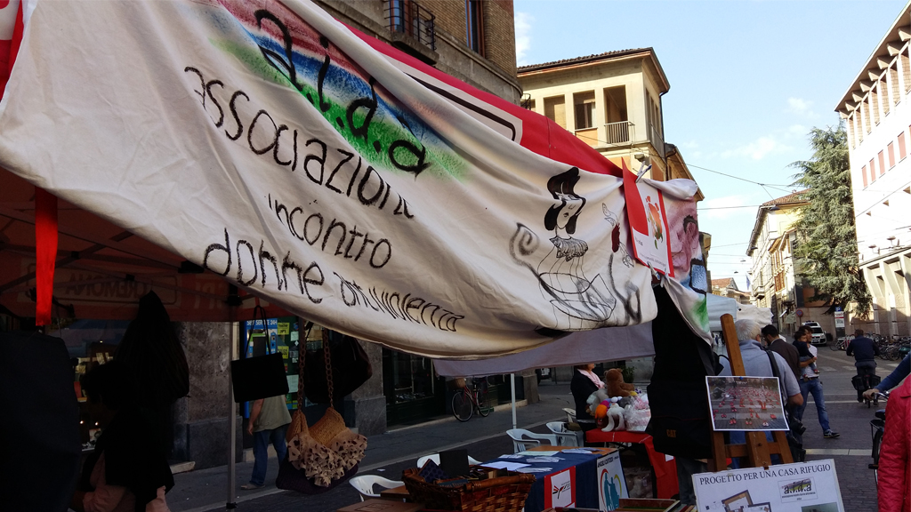

L’ Associazione di Volontariato A.I.D.A. Onlus (Associazione Incontro Donne Antiviolenza) è stata fondata il 12 giugno 2001 da un gruppo di donne di Cremona con lo scopo di prevenire la violenza contro le donne e di diffondere la cultura del rispetto dell’altro.
Il Centro Antiviolenza è un luogo di ascolto, dove si offre aiuto alle donne vittime di molestie, abusi, maltrattamenti e violenze, sia in famiglia che nella società, nel rispetto della loro cultura, etnia, religione, restituendo loro autonomia, maggior senso di dignità e autostima.
È un luogo di sostegno, di supporto, di valorizzazione e riprogettazione della vita delle donne.

A.I.D.A. promuove la ricerca, il dibattito e la divulgazione di temi che riguardano la violenza contro le donne, organizza attività di formazione, di prevenzione e di sensibilizzazione sul tema della violenza di genere, anche attraverso attività mirate nelle scuole.
A.I.D.A. Onlus è regolarmente iscritta all’Albo delle Associazioni di Volontariato della provincia di Cremona e all' Albo delle Pari Opportunità della Regione Lombardia. Si è costituita come Centro Antiviolenza, secondo i criteri previsti dalla legge nazionale e regionale, ed iscritta all’albo regionale dei centri antiviolenza. È associata alla Rete Nazionale dei Centri Antiviolenza Di.Re e al Coordinamento dei Centri Antiviolenza della Regione Lombardia. È membro del Comitato Tecnico della Rete Provinciale Antiviolenza della Provincia di Cremona.
L'Associazione ha promosso e aderisce al Protocollo d'Intesa della Rete Territoriale per la Prevenzione e il contrasto delle Violenze Contro le Donne sottoscritto nel 2013, contenente le modalità di funzionamento della Rete, i ruoli e le funzioni dei soggetti coinvolti, le linee guida e gli strumenti operativi condivisi.